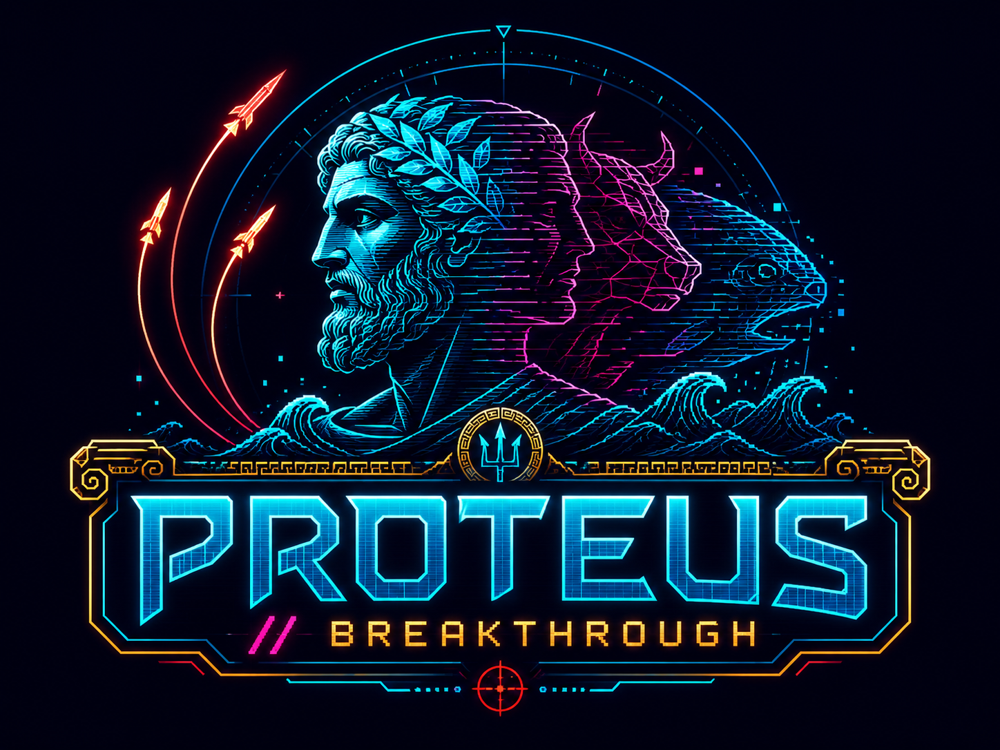

In 2004, Lee, Conroy, McGreevy & Barraclough built an adaptive opponent to study decision-making in macaques: an algorithm that watches every choice you make, runs nine statistical pattern detectors over your history, and exploits whatever regularity it finds. Dodging Proteus (Martin, 2026) put seven language models against it for 200-trial sessions of matching pennies — and found that prescribing the correct equilibrium strategy often made a model play worse.
This site recreates that contest as an arcade battle. You (or a model, replayed verbatim from the study's released data) command a missile battery; Proteus commands the countermeasures. Match its lane and you're intercepted — slip past it and score. The only unbeatable strategy is a fair coin. Can you be random?
Replay real 200-trial sessions — all seven models, both prompt frames — with Proteus's pattern-lock states reconstructed trial by trial. Watch Claude Sonnet's over-alternation get shredded at 64× speed.
200 missiles, one per keypress — with a live telemetry rack reading Proteus's nine detection channels in real time. Watch a channel cross the p=.05 redline the instant your pattern shows, get an animated Nash debrief, then see where you land among the models.
Martin, C. F. (2026). Dodging Proteus: Prescribing unexploitable play made language models more exploitable in a closed-loop matching pennies assay. Preprint.
Data & code: github.com/chimpanzity/dodging-proteus · OSF: doi.org/10.17605/OSF.IO/FM8SP
Proteus implements Algorithm 2 of Lee, Conroy, McGreevy & Barraclough (2004), Cognitive Brain Research. Sequential diagnostics follow Brown & Rosenthal (1990).